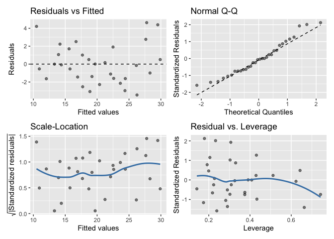
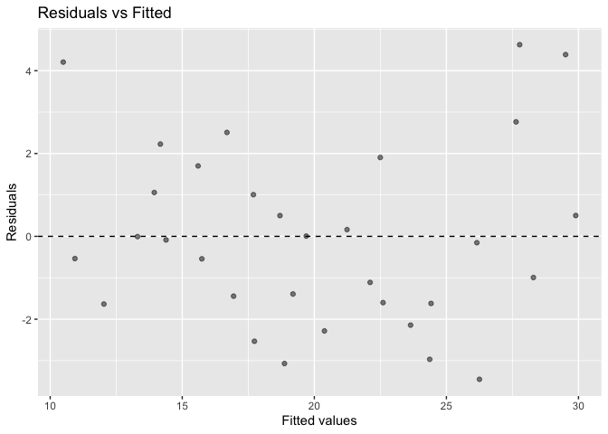
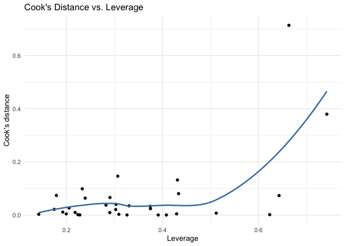

Overview
gglm, The Grammar of Graphics for Linear Model Diagnostics, is an R package and official ggplot2 extension that creates beautiful ggplot2 diagonostic plots for linear models that are easy to use and adhere to The Grammar of Graphics. The purpose of this package is to provide a sensible alternative to using the base-R plot() function to produce diagnostic plots for linear models.
Installation
You can now install gglm from CRAN, do so with this code:
install.packages("gglm")
Or, you can install the developmental version from GitHub:
devtools::install_github("graysonwhite/gglm")
Examples
gglm has two main types of functions. First, the gglm() function for quickly creating the four main diagnostic plots, similar to when you call plot() on an lm type object. Second, the stat_*() functions, which produce diagnostic plots the align with The Grammar of Graphics by creating ggplot2 layers that allow for easy plotting of particular model diagnostic plots.
Example 1: Quickly creating the four diagnostic plots with gglm()
library(gglm) # Load the package data(mtcars) # Load example data model <- lm(mpg ~ ., data = mtcars) # Create your model gglm(model) # Plot the four main diagnostic plots

Example 2: Using the Grammar of Graphics with the stat_*() functions
library(ggplot2) # Need to load ggplot2 ggplot(data = model) + stat_fitted_resid()

# We can also add layers such as themes to these `ggplot`s and adjust features of the plot: ggplot(data = model) + stat_cooks_leverage(alpha = 1) + theme_minimal()

Functions
For quick and easy plotting
gglm() plots the four default diagnostic plots when supplied an lm object. This function works similarly to plot.lm(), except that it displays the four diagnostic plots at once.
Following the Grammar of Graphics
stat_normal_qq(), stat_fitted_resid(), stat_resid_hist(), stat_scale_location(), stat_cooks_leverage(), stat_cooks_obs(), and stat_resid_leverage() all are ggplot2 layers used to create individual diagnostic plots. To use these, follow Example 2.